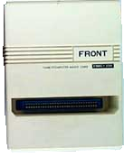
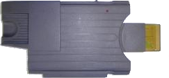
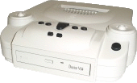
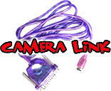
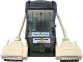
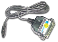
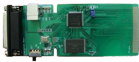
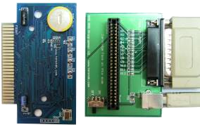

Super Wild Card 1.6XC/Super Wild Card 2.8CC/Super Wild Card DX(2)/SWC 19XX Front Far East/FFE http://www.front.com.tw (uCON64 options: --xswc, --xswc2, --xswcs, --xswcr, --xswcc, -xswc-io)  Super Pro Fighter (Q/Q+)/Pro Fighter X (Turbo 2)/Double Pro Fighter (X Turbo) 19XX China Coach Limited/CCL http://www.ccltw.com.tw (uCON64 options: --xfig, --xfigs, --xfigc)  Game Doctor SF3(SF6/SF7)/Professor SF(SF II) 19XX Bung Enterprises Ltd http://www.bung.com.hk (uCON64 options: --xgd3, --xgd6, --xgd3s, --xgd6s, --xgd3r, --xgd6r)  Super Com Pro (HK)/Super Magic Drive/SMD 19XX Front Far East/FFE http://www.front.com.tw (uCON64 options: --xsmd, --xsmds)  Super Magic Card 19XX Front Far East/FFE http://www.front.com.tw (uCON64 options: --xsmc, --xsmcr)  Magic Super Griffin/MSG 19XX Front Far East/FFE http://www.front.com.tw (uCON64 option: --xmsg)  Doctor V64 19XX Bung Enterprises Ltd http://www.bung.com.hk (uCON64 option: --xv64)  Doctor V64 Junior 19XX Bung Enterprises Ltd http://www.bung.com.hk (uCON64 option: --xdjr)  DexDrive (PSX and Nintendo 64 SRAMs) 19XX InterAct http://www.dexdrive.de (uCON64 option: --xdex) |
 Game Boy Xchanger 19XX Bung Enterprises Ltd http://www.bung.com.hk (uCON64 options: --xgbx, --xgbxs, --xgbxb, --xgbxm)  Mad Catz Camera Link (Game Boy Camera) XXXX Mad Catz Inc. http://www.madcatz.com (uCON64 option: --xmccl)  Flash Advance Linker 2001 Visoly http://www.visoly.com (uCON64 options: --xfal, --xfalmulti, --xfalc, --xfals, --xfalb, --xfalm)  Flash 2 Advance (Ultra) 2003 Flash2Advance http://www.flash2advance.com (uCON64 options: --xf2a, --xf2amulti, --xf2ac, --xf2as, --xf2ab) Lynxit (Lynx cartridge backup board) 1997 K. Wilkins (custom selfmade) (uCON64 option: --xlit)  (uCON64 options: --mksheet, --cdirip, and --nrgrip)  MD-PRO flash card programmer 200X ToToTEK http://www.tototek.com (uCON64 options: --xmd, --xmds)  PCE-PRO flash card programmer 200X ToToTEK http://www.tototek.com (uCON64 option: --xpce)  SMS-PRO flash card programmer 200X ToToTEK http://www.tototek.com (uCON64 options: --xgg, --xggs)  GG-PRO flash card programmer 200X ToToTEK http://www.tototek.com (uCON64 options: --xgg, --xggs) Cyan's Megadrive Copier 1999-2004 Cyan Helkaraxe (uCON64 options: --xcmc, --xcmct, --xcmcm) Mike Pavone's Genesis/Sega CD transfer cable 200X Mike Pavone (uCON64 options: --xmcd) |